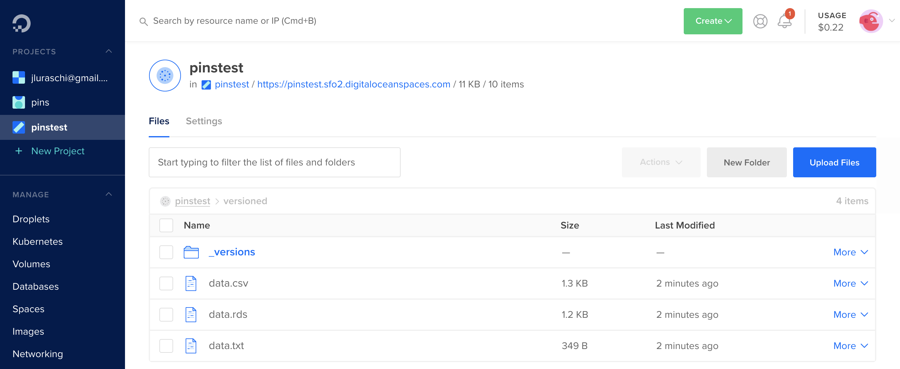

2020-05-29
Please note that the information presented in this post reflects the package as it stood when initially released, and may now be outdated. For the most up-to-date information, kindly refer to https://pins.rstudio.com/.
A new version of pins is available on CRAN today, which adds support for versioning your datasets and DigitalOcean Spaces boards!
As a quick recap, the pins package allows you to cache, discover and share resources. You can use pins in a wide range of situations, from downloading a dataset from a URL to creating complex automation workflows (learn more at pins.rstudio.com). You can also use pins in combination with TensorFlow and Keras; for instance, use cloudml to train models in cloud GPUs, but rather than manually copying files into the GPU instance, you can store them as pins directly from R.
To install this new version of pins from CRAN, simply run:
install.packages("pins")You can find a detailed list of improvements in the pins NEWS file.
To illustrate the new versioning functionality, let’s start by downloading and caching a remote dataset with pins. For this example, we will download the weather in London, this happens to be in JSON format and requires jsonlite to be parsed:
library(pins)
weather_url <- "https://samples.openweathermap.org/data/2.5/weather?q=London,uk&appid=b6907d289e10d714a6e88b30761fae22"
pin(weather_url, "weather") %>%
jsonlite::read_json() %>%
as.data.frame() coord.lon coord.lat weather.id weather.main weather.description weather.icon
1 -0.13 51.51 300 Drizzle light intensity drizzle 09dOne advantage of using pins is that, even if the URL or your internet connection becomes unavailable, the above code will still work.
But back to pins 0.4! The new signature parameter in pin_info() allows you to retrieve the “version” of this dataset:
pin_info("weather", signature = TRUE)# Source: local<weather> [files]
# Signature: 624cca260666c6f090b93c37fd76878e3a12a79b
# Properties:
# - path: weatherYou can then validate the remote dataset has not changed by specifying its signature:
pin(weather_url, "weather", signature = "624cca260666c6f090b93c37fd76878e3a12a79b") %>%
jsonlite::read_json()If the remote dataset changes, pin() will fail and you can take the appropriate steps to accept the changes by updating the signature or properly updating your code. The previous example is useful as a way of detecting version changes, but we might also want to retrieve specific versions even when the dataset changes.
pins 0.4 allows you to display and retrieve versions from services like GitHub, Kaggle and RStudio Connect. Even in boards that don’t support versioning natively, you can opt-in by registering a board with versions = TRUE.
To keep this simple, let’s focus on GitHub first. We will register a GitHub board and pin a dataset to it. Notice that you can also specify the commit parameter in GitHub boards as the commit message for this change.
board_register_github(repo = "javierluraschi/datasets", branch = "datasets")
pin(iris, name = "versioned", board = "github", commit = "use iris as the main dataset")Now suppose that a colleague comes along and updates this dataset as well:
pin(mtcars, name = "versioned", board = "github", commit = "slight preference to mtcars")From now on, your code could be broken or, even worse, produce incorrect results!
However, since GitHub was designed as a version control system and pins 0.4 adds support for pin_versions(), we can now explore particular versions of this dataset:
pin_versions("versioned", board = "github")# A tibble: 2 x 4
version created author message
<chr> <chr> <chr> <chr>
1 6e6c320 2020-04-02T21:28:07Z javierluraschi slight preference to mtcars
2 01f8ddf 2020-04-02T21:27:59Z javierluraschi use iris as the main datasetYou can then retrieve the version you are interested in as follows:
pin_get("versioned", version = "01f8ddf", board = "github")# A tibble: 150 x 5
Sepal.Length Sepal.Width Petal.Length Petal.Width Species
<dbl> <dbl> <dbl> <dbl> <fct>
1 5.1 3.5 1.4 0.2 setosa
2 4.9 3 1.4 0.2 setosa
3 4.7 3.2 1.3 0.2 setosa
4 4.6 3.1 1.5 0.2 setosa
5 5 3.6 1.4 0.2 setosa
6 5.4 3.9 1.7 0.4 setosa
7 4.6 3.4 1.4 0.3 setosa
8 5 3.4 1.5 0.2 setosa
9 4.4 2.9 1.4 0.2 setosa
10 4.9 3.1 1.5 0.1 setosa
# … with 140 more rowsYou can follow similar steps for RStudio Connect and Kaggle boards, even for existing pins! Other boards like Amazon S3, Google Cloud, Digital Ocean and Microsoft Azure require you explicitly enable versioning when registering your boards.
To try out the new DigitalOcean Spaces board, first you will have to register this board and enable versioning by setting versions to TRUE:
library(pins)
board_register_dospace(space = "pinstest",
key = "AAAAAAAAAAAAAAAAAAAA",
secret = "ABCABCABCABCABCABCABCABCABCABCABCABCABCA==",
datacenter = "sfo2",
versions = TRUE)You can then use all the functionality pins provides, including versioning:
# create pin and replace content in digitalocean
pin(iris, name = "versioned", board = "pinstest")
pin(mtcars, name = "versioned", board = "pinstest")
# retrieve versions from digitalocean
pin_versions(name = "versioned", board = "pinstest")# A tibble: 2 x 1
version
<chr>
1 c35da04
2 d9034cdNotice that enabling versions in cloud services requires additional storage space for each version of the dataset being stored:

To learn more visit the Versioning and DigitalOcean articles. To catch up with previous releases:
Thanks for reading along!